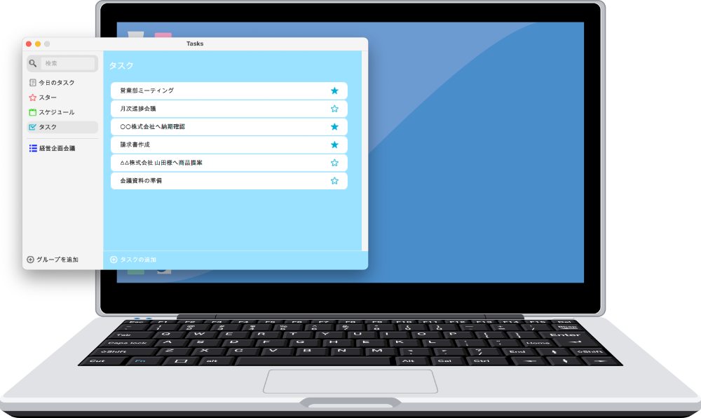

Tasksで日々のタスクを
効率的に管理
Tasks ver 1.0.2 for Windows and Mac
Tasksでは、日々のタスクをさまざまな形で管理できます。
登録したタスクから今日のタスクをピックアップして、「今日のタスクリスト」を作成したり、
重要なタスクにスターマークをつけて、忘れないようにしたり、
タスクに期限を設定して、今日・今週・来週のスケジュールを作成したり、
タスクをグループにまとめて複数のタスクを一括管理したりできます。
